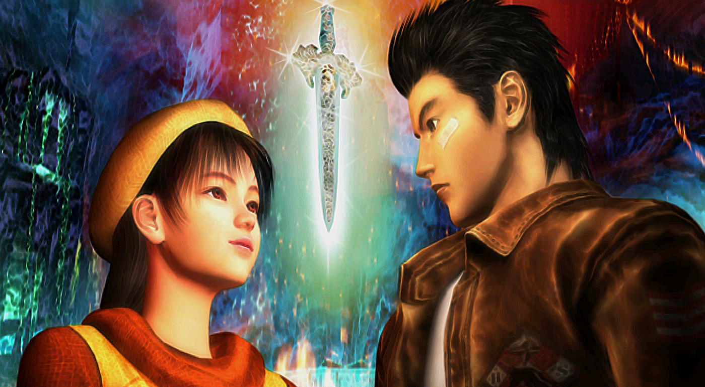

En 1994, Yu Suzuki y su equipo pasaron una temporada en China buscando información y material gráfico
para una nueva entrega de la saga de juegos de lucha Virtua Fighter. Mientras tanto, y según declaró en varias entrevistas,
a Suzuki le empezó a atraer la idea de hacer algún tipo de trabajo novedoso que tuviera una línea argumental de fondo.
Poco después de empezar a escribir el argumento, decidió que esa historia sería la de su nuevo juego,
que se empezó a conocer por aquel entonces como Project Berkley.
Al principio no se iba a separar de la saga Virtua Fighter,
y de hecho uno de los primeros nombres que se empezaron a barajar para el juego era Virtua Fighter RPG.El nombre acabó cambiando a
Shenmue
, pero en el juego quedaron reminiscencias de la saga Virtua Fighter, como por ejemplo-
varias similitudes entre los sendos protagonistas principales de ambos juegos,
- así como en el sistema de combate.
Un problema a afrontar era elegir el hardware para el que se publicaría el juego.
La Megadrive era la consola de SEGA más popular del momento,
pero se quedaba corta para el ambicioso proyecto de Suzuki. Por tanto, se decidió empezar a trabajar para Saturn.
A costa de un duro esfuerzo, debido a la compleja arquitectura de esa máquina:- se alcanzó un resultado gráfico impresionante
- se consiguió mover un entorno tridimensional de grandes dimensiones y muy detallado para la época,
aunque no se moviera muy fluidamente.
- También se programó una rutina gráfica para dibujar gráficos transparentes (como sombras),
una técnica ya usada anteriormente en Burning Rangers también para Saturn, y de una gran complejidad.

INICIO,